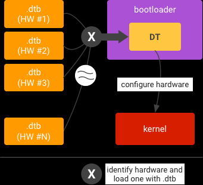
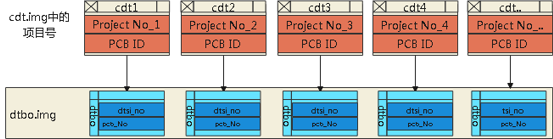
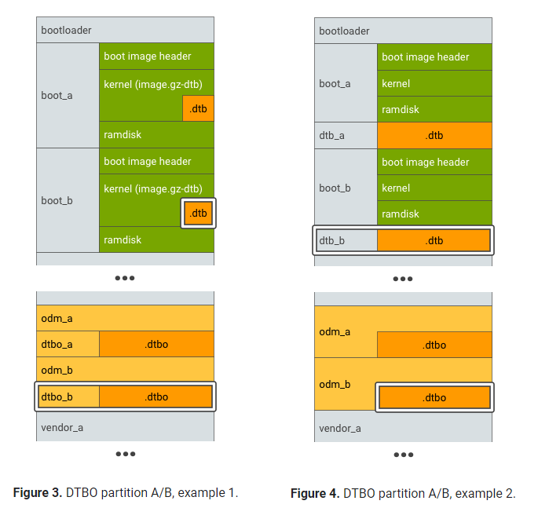
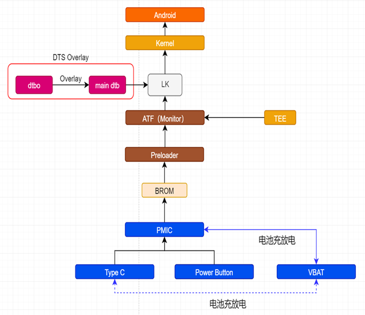
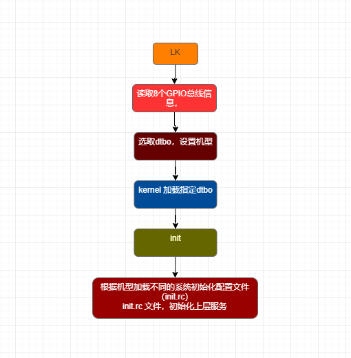

概述
很多 SoC 供应商和 ODM 都支持在一台设备上使用多个 DT，从而使一个映像能够为多个 SKU/配置提供支持。
在这种情况下，引导加载程序会在运行时识别硬件，并加载相应的 DT：

参考
android分区dtbo,使用多个 DT | Android 开源项目 | Android Open Source Project
Dts：DTS即Device Tree Source，是一个文本形式的文件，用于描述硬件信息。一般都是固定信息，无法变更，无法overlay。
Dtsi：可以理解为dts的公共部分，添加、变更非常灵活。Dtsi包含在dts中。
Dtb：Dtb编译出来的二进制
Dtbo：Overlay编译出来的二进制
dtbo-base：指定overlay是以哪个dtb为base来覆盖的。
Node：树的节点
Property：属性
设备树由来
linux内核源码中，之前充斥着大量的平台相关（platform Device）配置，而这些代码大多是杂乱且重复的，这使得ARM体系结构的代码维护者和内核维护者在发布一个新的版本的时候有大量的工作要做，以至于LinusTorvalds 在2011年3月17日的ARM Linux邮件列表中宣称“Gaah.Guys,this whole ARM thing is a f*cking pain in the ass”这使得整个ARM社区不得不重新慎重考虑平台配置，于是设备树（Device Tree，DT）被ARM社区采用。需要说明的是，设备树最初是由开发固件（Open Firmware）使用的用来向客户程序（通常是一个操作系统）传递数据的通信方法中的一部分内容。在运行时，客户程序通过设备树发现设备的拓扑结构，这样就不需要把硬件信息硬编码到程序中。
设备树的作用
设备树是一个描述硬件的数据结构，甚至你可以将其看成一个大结构体（这个结构体就是平台，成员就是具体的设备），需要注意的是设备树并不能解决所有的硬件配置问题（例如：机器识别），它只是提供一种语言，将硬件的配置从linux内核的源码中提取出来。
Linux使用设备树的主要原因如下
A:平台识别
B:实时配置
C:设备植入
设备树解耦目标
目标一 vendor相关修改，完全独立出来，禁止在soc原生的dtsi中修改，只允许以dtbo的方式存在；
目标二 同基线项目dtbo要共二进制
设备树解耦框架设计

Android 8以后dtb存放位置
Android 8之后为了更好的解耦与升级，google引入了DTO，将DTS分成两部分，一部分是平台相关的DTS，仍是编译成dtb.img打包至boot.img，一部分是ODM/OEM根据硬件客制化修改的DTS，编译的产物放到dtbo分区。

Android 11以上+kernel-5.4以上dtb存放位置
Kernel-5.4以上由于GKI问题，dtb.img不再打包到boot.img，而是放入vendor_boot.img，加入vendor_boot分区，需要BOARD_BOOT_HEADER_VERSION等于3，bootloader加载也会使用到这个值。
QCM2290
在做Android 8时，发现在dts中引入了dto。设备树叠加层（DTO）可让主要的设备树（DTB）叠加到设备树上。使用DTO的引导程序可以维护系统芯片（SOC）DT,并动态叠加针对特定设备的DT，从而向树中添加节点并对先用树中的属性进行更改。也就是SOC的设备节点作为DTB，其他设备作为DTO，DTO可以对DTB中的节点进行引用和修改。实现DTO包括分割设备树，编译，分区和运行。
ABL加载dtbo
首先看一下dtb和dtbo里面的内容：
dtbo:
m9200-scuba-iot-idp-overlay.dts
/dts-v1/;
/plugin/;
#include <dt-bindings/interrupt-controller/arm-gic.h>
#include "scuba-iot-idp.dtsi"
#include "fibo-lcd.dtsi" //modified by tfl for tfl for LCD bringup 20221108
#include "fibo-touchscreen.dtsi" // modified by tfl for tfl for TP 20221108
/ {
model = "Qualcomm Technologies, Inc. Scuba IOT IDP";
compatible = "qcom,scuba-idp", "qcom,scuba-iot", "qcom,idp";
qcom,msm-id = <473 0x10000>, <474 0x10000>;
qcom,board-id = <34 0>;
soc {
pax_board_info {
compatible = "pax,board_info";
pax,main_board = "V01";
pax,port_board = "V01";
pax,terminal_name = "M9200";
};
};
};
dtb:
m9200-scuba-iot-idp.dts
/dts-v1/;
#include "scuba-iot.dtsi"
/ {
model = "Qualcomm Technologies, Inc. Scuba IOT SoC";
compatible = "qcom,scuba-iot";
qcom,board-id = <34 0>;
soc {
pax_board_info {
compatible = "pax,board_info";
pax,main_board = "V01";
pax,port_board = "V01";
pax,terminal_name = "M9200";
};
};
};
ABL匹配dtbo和dtb流程如下：
* LinuxLoaderEntry //ABL入口函数
└── BootLinux (&Info);
└── Status = DTBImgCheckAndAppendDT (Info, &BootParamlistPtr);
├── if (HeaderVersion > BOOT_HEADER_VERSION_ONE)
│ └── NumKernelPages =GetNumberOfPages (BootParamlistPtr->KernelSize,BootParamlistPtr->PageSize); //从boot.img中获取dtb
│ ├── if (HeaderVersion == BOOT_HEADER_VERSION_TWO)
│ │ └── ImageBuffer = BootParamlistPtr->ImageBuffer;
│ └── if (HeaderVersion == BOOT_HEADER_VERSION_THREE)
│ └── ImageBuffer = BootParamlistPtr->VendorImageBuffer; //从vendor_boot.img中获取dtb
└── SocDtb = GetSocDtb (ImageBuffer,ImageSize,BootParamlistPtr->DtbOffset, (VOID *)BootParamlistPtr->DeviceTreeLoadAddr); //获取dtb
├── ReadDtbFindMatch (&CurDtbInfo, &BestDtbInfo, BIT(SOC_MATCH) | BIT(PAX_BOARD_INFO_MATCH) //匹配dtb
│ ├── PlatProp = (CONST CHAR8 *)fdt_getprop (Dtb, RootOffset, "qcom,msm-id",&LenPlatId); //读取dtb中的qcom,msm-id
│ ├── BoardProp = (CONST CHAR8 *)fdt_getprop (Dtb, RootOffset, "qcom,board-id",&LenBoardId);//读取dtb中的qcom,board-id
│ ├── GetBoardMatchDtb (CurDtbInfo, BoardProp, LenBoardId); //和xbl中读出来的对比，Get the properties like variant id, subtype from Dtb then compare the dtb vs Board
│ ├── (CONST CHAR8 *)fdt_getprop (Dtb, RootOffset, "qcom,pmic-id", &LenPmicId);
│ ├── ReadBestPmicMatch (PmicProp, PmicMaxIdx, PmicEntCount, &BestPmicInfo);// 对比qcom,pmic-id，dts中没这个
│ └── GetPaxBoardInfoMatchDtb(CurDtbInfo); //pax加的
│ ├── RootOffset = fdt_path_offset(Dtb, "/soc/pax_board_info"); //找到soc=pax_board_info的dtb
│ ├── MainBoardProp = (CONST CHAR8 *)fdt_getprop(Dtb, RootOffset, "pax,main_board",
│ ├── PortBoardProp = (CONST CHAR8 *)fdt_getprop(Dtb, RootOffset, "pax,port_board",
│ ├── TerminalNameProp = (CONST CHAR8 *)fdt_getprop(Dtb, RootOffset, "pax,terminal_name", //读取dts中三个dtb属性
│ ├── if (getCfgTermialName(Buff) < 0) //对比terminal_name
│ │ └── return getCfgItemValStr("TERMINAL_NAME", buf); //pax_lib.c 我们terminal_name、port_board、main_board都是从sp配置文件中获取的
│ ├── if (AsciiStrnCmp(Buff, TerminalName, TerminalNamePropLen))
│ │ └── return EFI_NOT_FOUND;
│ ├── if (getCfgMainBoard(Buff) < 0)
│ ├── if (AsciiStrnCmp(Buff, MainBoard, MainBoardPropLen)) //对比main_board
│ ├── if (getCfgPortBoard(Buff) < 0)
│ └── if (AsciiStrnCmp(Buff, PortBoard, PortBoardPropLen)) //对比port_board
└── return BestDtbInfo.Dtb; //
header_version版本决定dtb存储位置
BootImage.h解释：
#define BOOT_HEADER_VERSION_ONE 1
struct boot_img_hdr_v1 {
UINT32 recovery_dtbo_size; /* size in bytes for recovery DTBO image */
UINT64 recovery_dtbo_offset; /* physical load addr */
UINT32 header_size;
} __attribute__((packed));
/* When the boot image header has a version of BOOT_HEADER_VERSION_ONE,
* the structure of the boot image is as follows:
*
* +-----------------+
* | boot header | 1 page
* +-----------------+
* | kernel | n pages
* +-----------------+
* | ramdisk | m pages
* +-----------------+
* | second stage | o pages
* +-----------------+
* | recovery dtbo | p pages
* +-----------------+
* n = (kernel_size + page_size - 1) / page_size
* m = (ramdisk_size + page_size - 1) / page_size
* o = (second_size + page_size - 1) / page_size
* p = (recovery_dtbo_size + page_size - 1) / page_size
*
* 0. all entities are page_size aligned in flash
* 1. kernel and ramdisk are required (size != 0)
* 2. recovery_dtbo is required for recovery.img
* in non-A/B devices(recovery_dtbo_size != 0)
* 3. second is optional (second_size == 0 -> no second)
* 4. load each element (kernel, ramdisk, second, recovery_dtbo) at
* the specified physical address (kernel_addr, etc)
* 5. prepare tags at tag_addr. kernel_args[] is
* appended to the kernel commandline in the tags.
* 6. r0 = 0, r1 = MACHINE_TYPE, r2 = tags_addr
* 7. if second_size != 0: jump to second_addr
* else: jump to kernel_addr
*/
#define BOOT_IMAGE_HEADER_V2_OFFSET sizeof (struct boot_img_hdr_v1)
#define BOOT_HEADER_VERSION_TWO 2
struct boot_img_hdr_v2 {
UINT32 dtb_size; /* size in bytes for DTB image */
UINT64 dtb_addr; /* physical load address for DTB image */
} __attribute__((packed));
/* When the boot image header has a version of BOOT_HEADER_VERSION_TWO,
* the structure of the boot image is as follows:
*
* +-----------------+
* | boot header | 1 page
* +-----------------+
* | kernel | n pages
* +-----------------+
* | ramdisk | m pages
* +-----------------+
* | second stage | o pages
* +-----------------+
* | recovery dtbo | p pages
* +-----------------+
* | dtb.img | q pages
* +-----------------+
*
* n = (kernel_size + page_size - 1) / page_size
* m = (ramdisk_size + page_size - 1) / page_size
* o = (second_size + page_size - 1) / page_size
* p = (recovery_dtbo_size + page_size - 1) / page_size
* q = (dtb_size + page_size - 1) / page_size
*
* 0. all entities are page_size aligned in flash
* 1. kernel and ramdisk are required (size != 0)
* 2. recovery_dtbo is required for recovery.img (recovery_dtbo_size != 0)
* 3. second is optional (second_size == 0 -> no second)
* 4. dtb.img has all the dtbs catted one after the other
* 5. load each element (kernel, ramdisk, second, recovery_dtbo) at
* the specified physical address (kernel_addr, etc)
* 6. prepare tags at tag_addr. kernel_args[] is
* appended to the kernel commandline in the tags.
* 7. r0 = 0, r1 = MACHINE_TYPE, r2 = tags_addr
* 8. if second_size != 0: jump to second_addr
* else: jump to kernel_addr
*/
#define BOOT_HEADER_VERSION_THREE 3
/* When the boot image header has a version of 3, the structure of the boot
* image is as follows:
*
* +---------------------+
* | boot header | 1 page
* +---------------------+
* | kernel | m pages
* +---------------------+
* | ramdisk | n pages
* +---------------------+
* m = (kernel_size + page_size - 1) / page_size
* n = (ramdisk_size + page_size - 1) / page_size
*
* and the structure of the vendor boot image (introduced with version 3) is as
* follows:
*
* +---------------------+
* | vendor boot header | 1 page
* +---------------------+
* | vendor ramdisk | o pages
* +---------------------+
* | dtb | p pages
* +---------------------+
* o = (vendor_ramdisk_size + page_size - 1) / page_size
* p = (dtb_size + page_size - 1) / page_size
*
* 0. all entities are page_size aligned in flash
* 1. kernel, ramdisk, vendor ramdisk, and DTB are required (size != 0)
* 2. load the kernel and DTB at the specified physical address (kernel_addr,
* dtb_addr)
* 3. load the vendor ramdisk at ramdisk_addr
* 4. load the generic ramdisk immediately following the vendor ramdisk in
* memory
* 5. prepare tags at tag_addr. kernel_args[] is appended to the kernel
* commandline in the tags.
* 6. r0 = 0, r1 = MACHINE_TYPE, r2 = tags_addr
* 7. if the platform has a second stage bootloader jump to it (must be
* contained outside boot and vendor boot partitions), otherwise
* jump to kernel_addr
*/
可以看到当BOOT_HEADER_VERSION_THREE 3时，表示内核版本是Kernel-5.4以上，由于GKI问题，dtb.img不再打包到boot.img，而是放入vendor_boot.img，加入vendor_boot分区，ABL加载也会使用到这个值，目前qcm2290没有这个分区，所有dtb还是放在boot.img，可见还是由内核版本决定的。
目前ABL中
HEADER_VERSION获取方式是从boot.img镜像中获取：
EFI_STATUS
BootLinux (BootInfo *Info)
{
Status = GetImage (Info,
&BootParamlistPtr.ImageBuffer,
(UINTN *)&BootParamlistPtr.ImageSize,
((!Info->MultiSlotBoot ||
IsDynamicPartitionSupport ()) &&
(Recovery &&
!IsBuildUseRecoveryAsBoot ()))?
"recovery" : "boot");
if (Status != EFI_SUCCESS ||
BootParamlistPtr.ImageBuffer == NULL ||
BootParamlistPtr.ImageSize <= 0) {
DEBUG ((EFI_D_ERROR, "BootLinux: Get%aImage failed!\n",
(!Info->MultiSlotBoot &&
(Recovery &&
!IsBuildUseRecoveryAsBoot ()))? "Recovery" : "Boot"));
return EFI_NOT_STARTED;
}
Info->HeaderVersion = ((boot_img_hdr *)
(BootParamlistPtr.ImageBuffer))->header_version;
}
分割DT
首先将设备树分割成两部分：
主DT。由SOC供应商提供的SOC公用部分和默认配置。
叠加DT。由原始设计制造商(ODM)/原始设备制造商(OEM)提供的设备专属配置。
MT6765
目前使用的MT6762芯片使用的两个dtb，MTK标准dtb和客制化dtbo。MTK标准dtb存在于boot.img，保存在BOOT分区；客制化dtbo存在于dtbo.img中，保存在DTBO分区。在LK加载DTBO之前，需要处理当前的需要的DTBO索引，以下是lk中加载dtbo的逻辑。
参考
A800是通过lk中向sp读取三个参数合成dtb命名，并merge dtb和dtbo
uuid = TERMINAL_NAME(1 byte) | MAIN_BOARD(1 byte) | PORT_BOARD(1 byte)\
dts命名规则：
TERMINAL_NAME+MAIN_BOARD+PORT_BOARD
A800_MT6761_V05_V03.dts
实现流程
硬件兼容实现流程：
编译过程中将多个硬件设备的设备树打包dtbo
硬件通过8个GPIO总线定义不同硬件产品
MTK LK模块启动过程中读取GPIO状态，判断当前硬件机型
根据机型选择对应机型的dtbo，在cmdline 中增加机型信息，将机型参数传入kernel
Kernel 加载init进程，init根据机器类型，加载不同的init.rc配置文件
Init根据配置，加载不同硬件服务，设置屏幕的分辨率，加载设备驱动

通过dts overlay技术，将所有的dtbo合并到main dtb中：

LK修改
在lk引导加载程序中运行
将 .dtb 从存储加载到内存中
根据
get_odm_mdtbo_index选择正确的dtbo，并将 .dtbo 从存储加载到内存中用 .dtbo 叠加 .dtb 以形成合并的 DT
启动内核（已给定合并 DT 的内存地址）
* arch/arm/crt0.S
└── kernel/main.c
└── thread_t *thread_bs2 = thread_create("bootstrap2", &bootstrap2, NULL, DEFAULT_PRIORITY, DEFAULT_STACK_SIZE);
└── bootstrap2(void *arg)
├── platform_init();
├── load_device_tree(void)
│ └── lk_dtb_init(void) //platform/common/lk_main_dtb_loader/lk_builtin_dtb.c
│ └── load_dtbo_buffer(void **dtbo_ptr, uint32_t *dtbo_size)
│ └── parse_dtbo_tbl((struct dt_table_header *)dtbo_total_buffer, (uint32_t)get_odm_mdtbo_index(), //app/mt_boot/fdt_op.c 重要
│ └── set_dtbo_index(dtbo_entry_idx);
└── apps_init();
└── APP_START(mt_boot) .init = mt_boot_init, APP_END
└── mt_boot_init(const struct app_descriptor *app)
├── boot_linux_from_storage(void)
├── case NORMAL_BOOT:
│ └── load_vfy_boot(BOOTIMG_TYPE_BOOT, CFG_BOOTIMG_LOAD_ADDR);
│ └── boot_post_processing(&ops, bootimg_type, slot_data);//platform/common/boot/avb20/load_vfy_boot.c
│ └── prepare_kernel_dtb();
│ └── dtb_overlay(main_dtb ? main_dtb : (void *)get_main_dtb_load_addr(), //app/mt_boot/fdt_op.c
│ ├── load_overlay_dtbo() //app/mt_boot/odm_mdtbo.c
│ └── merged_fdt = ufdt_apply_overlay(blob, blob_len, overlay_buf, overlay_len); // A buffer is allocated in load_overlay_dtbo() to store the loaded odm dtb
│ └── load_dtb_from_multiple_dtbo(part_name, hdr2, &ptr, (uint64_t)recovery_dtbo_offset);
│ └── get_odm_mdtbo_index()
│ ├── if (customized_get_odm_mdtbo_index) //用户定制
│ └── odm_dtbo_index = customized_get_odm_mdtbo_index();
└── boot_linux((void *)kernel_target_addr,(unsigned *)tags_target_addr,board_machtype(),(void *)ramdisk_target_addr,ramdisk_real_sz);
└── boot_linux_fdt((void *)kernel, (unsigned *)tags, machtype,(void *)ramdisk, ramdisk_sz); // app/mt_boot/mt_boot.c
├── snprintf(tmpbuf, TMPBUF_SIZE, "androidboot.dtb_idx=0 androidboot.dtbo_idx=%d", get_dtbo_index());
└── cmdline_append(tmpbuf);//将androidboot.dtbo_idx以cmdline形式传给kernel
以上流程如下：
1.
platform_init->parse_dtbo_tbl流程通过get_odm_mdtbo_index获取dtb_idx，并通过set_dtbo_index设置全局变量hw_mdtbo_index。2.
apps_init->ufdt_apply_overlay准备kernel dtb，主要是在load_overlay_dtbo()中分配了一个缓冲区来存储加载的odm dtb,将.dtbo和.dtb从存储加载到内存中，用.dtbo叠加.dtb以形成合并的 DT。3.
apps_init->cmdline_append启动内核，通过get_dtbo_index获取全局变量hw_mdtbo_index，并将dtbo_idx以cmdline形式传给kernel。
dts定制函数根据boardid，如果M8项目则idx=1则选择M8.dts：
platform/mt6765/custom_dtb_index.c：
#include <odm_mdtbo.h> // for customized_get_odm_mdtbo_index()
#include <platform/mt_gpio.h> // for mt_get_gpio_in()
#define GPIO_163 (0x80000000 | 163)
#define GPIO_164 (0x80000000 | 164)
#define GPIO_HIGH (1)
#define GPIO_LOW (0)
/******************************************************************************
* NOTE: This function is for the internal projects of MT6771.
* -----------------------------------------
* | ID4 ID5 PCB_ID |
* | Low Low M50 |
* | Low High M8 |
* | High Low M8 |
* | High High M8 |
* -----------------------------------------
*
* Customers need to implement their own customized_get_odm_mdtbo_index()
* function.
******************************************************************************/
int customized_get_odm_mdtbo_index(void)
{
int idx = 0;
int board_id = getBoardIDVals();
/*[FEATURE]-Add-BEGIN by zengjianfeng@paxsz.com, 2021/05/13, for multi dts */
dprintf(INFO, "get board id vals: 0x%02x\n", board_id);
if ((board_id & (0x03 << 3)) > 0)
idx = 1;
dprintf(INFO, "dtb index: 0x%02x\n", idx);
/*[FEATURE]-Add-END by zengjianfeng@paxsz.com, 2021/05/13, for multi dts */
return idx;
}
Kernel修改
修改MTK_PROJECT_DTB_NAMES，增加两个dtb。
--- a/device/mediateksample/k62v1_64_pax/ProjectConfig.mk
+++ b/device/mediateksample/k62v1_64_pax/ProjectConfig.mk
@@ -521,7 +521,7 @@ MTK_BT_HEARING_AID_SUPPORT = no
MTK_CAM_VPU_DSDN = no
MTK_AI_CAM_SUPPORT = no
MTK_BIP_UICC_SERVER_MODE = no
-MTK_PROJECT_DTB_NAMES =
+MTK_PROJECT_DTB_NAMES = mediatek/M50 mediatek/M8
结果验证
M8和M50的cmdline如下：
M50:
cmdline:
androidboot.dtbo_idx=0
M8：
androidboot.dtbo_idx=1
编译程序流程
主要文件：
编译脚本
device/mediatek/build/core：
wugn@jcrj-tf-compile:core$ tree
.
├── base_rule_hook.mk
├── base_rules.mk
├── build_dtbimage.mk
├── build_dtb.mk
├── build_dtboimage.mk
├── build_ko.mk
├── definitions.mk
├── executable.mk
├── mssi_fo.mk
├── override_config.mk
├── prebuilt.mk
├── sdk.atree
├── sdk_deps.mk
├── shared_library.mk
├── soong_config.mk
├── static_library.mk
└── target_brm_platform.mk
merge目录：
out/target/product/k62v1_64_pax/obj/KERNEL_OBJ/arch/arm64/boot/dts/mediatek
wugn@jcrj-tf-compile:mediatek$ tree
.
├── auto2712p1v1-ivi-boot.dtb
├── auto2712p1v1-ivi-nand-boot.dtb
├── M50.dtb
├── M50.dtb.merge
├── M50.dts
├── M8.dtb
├── M8.dtb.merge
├── M8.dts
├── modules.order
├── mt6765.dtb
└── mt6765.dts
mt6765.dtb及dtbo.img生成目录：
out/target/product/k62v1_64_pax/obj/PACKAGING/dtb
wugn@jcrj-tf-compile:PACKAGING$ tree dtb*
dtb
├── mtk_dtb
└── mtk.dtb
dtboimage
└── dtbo.img
dtb和dtbo定义
mtk中dtb和dtbo编译脚本如下，MTK_DTBOIMAGE_DTS是mediatek/M50 mediatek/M8：
### DTB build template
MTK_DTBIMAGE_DTS := $(addsuffix .dts,$(addprefix $(KERNEL_DIR)/arch/$(KERNEL_TARGET_ARCH)/boot/dts/,$(PLATFORM_DTB_NAME)))
include device/mediatek/build/core/build_dtbimage.mk
MTK_DTBOIMAGE_DTS := $(addsuffix .dts,$(addprefix $(KERNEL_DIR)/arch/$(KERNEL_TARGET_ARCH)/boot/dts/,$(PROJECT_DTB_NAMES)))
include device/mediatek/build/core/build_dtboimage.mk
device/mediatek/vendor/common/BoardConfig.mk``MTK_DTBIMAGE_DTS是mediatek/mt6765，根据如下TARGET_BOARD_PLATFORM定义:
device/mediatek/mt6765/device.mk
5:TARGET_BOARD_PLATFORM ?= mt6765
ifeq ($(strip $(MTK_PLATFORM_DTB_NAME)),)
ifeq ($(MTK_K64_SUPPORT), yes)
PLATFORM_DTB_NAME ?= mediatek/$(TARGET_BOARD_PLATFORM)
else
PLATFORM_DTB_NAME ?= $(TARGET_BOARD_PLATFORM)
endif
else
PLATFORM_DTB_NAME ?= $(MTK_PLATFORM_DTB_NAME)
endif
以上得知dtb是mt6765.dts，dtbo是M8.dts。
build_dtbimage.mk分析（mt6765.dtb编译流程）
该脚本主要生成dtb文件
mt6765.dtb,然后改名为mtk_dtb,目录out/target/product/k62v1_64_pax/obj/PACKAGING/dtb，代码如下：
ifdef MTK_DTBIMAGE_DTS
ifneq (true,$(strip $(TARGET_NO_KERNEL)))
ifneq ($(LINUX_KERNEL_VERSION),)
ifeq (,$(KERNEL_OUT))
include $(LINUX_KERNEL_VERSION)/kenv.mk
endif
#这里MTK_DTBIMAGE_DTS是mediatek/mt6765，得知LOCAL_SRC_FILES也是 \
#功能是生成dtb文件mt6765.dtb
MTK_DTBIMAGE_DTB :=
$(foreach i,$(MTK_DTBIMAGE_DTS),\
$(eval LOCAL_SRC_FILES := $(i))\
$(eval include device/mediatek/build/core/build_dtb.mk)\
$(eval MTK_DTBIMAGE_DTB += $(my_kernel_dtb))\
)
MTK_CHECK_DTBO_MAIN := $(MTK_DTBIMAGE_DTB)
my_dtb_id := 0
define mk_dtbimg_cfg
echo $(1) >>$(2);\
echo " id=$(my_dtb_id)" >>$(2);\
$(eval my_dtb_id := (call int_plus,$(my_dtb_id),1))
endef
ifdef BOARD_PREBUILT_DTBIMAGE_DIR
BOARD_PREBUILT_DTBIMAGE := $(BOARD_PREBUILT_DTBIMAGE_DIR)/mtk.dtb
$(shell if [ ! -f $(BOARD_PREBUILT_DTBIMAGE) ]; then mkdir -p $(dir $(BOARD_PREBUILT_DTBIMAGE)); touch $(BOARD_PREBUILT_DTBIMAGE); fi)
/*
#cat mt6765.dtb > mtk_dtb \
#对比文件大小，确实一样 \
#wugn@jcrj-tf-compile:dtb$ ls -l
#total 224
#-rw-rw-r-- 1 wugn wugn 111374 Jul 11 22:24 mtk_dtb
#wugn@jcrj-tf-compile:mediatek$ ls -l
#-rw-rw-r-- 1 wugn wugn 111374 Jul 11 22:24 mt6765.dtb
*/
INSTALLED_MTK_DTB_TARGET := $(BOARD_PREBUILT_DTBIMAGE_DIR)/mtk_dtb
$(INSTALLED_MTK_DTB_TARGET): $(MTK_DTBIMAGE_DTB)
$(hide) mkdir -p $(dir $@)
$(hide) cat $^ > $@
MTK_DTBIMAGE_CFG := $(KERNEL_OUT)/arch/$(KERNEL_TARGET_ARCH)/boot/dts/dtbimg.cfg
$(MTK_DTBIMAGE_CFG): PRIVATE_DTB := $(INSTALLED_MTK_DTB_TARGET)
$(MTK_DTBIMAGE_CFG): $(INSTALLED_MTK_DTB_TARGET)
$(hide) rm -f $@.tmp
$(hide) $(foreach f,$(PRIVATE_DTB),$(call mk_dtbimg_cfg,$(f),$@.tmp))
if ! cmp -s $@.tmp $@; then \
mv $@.tmp $@; \
else \
rm $@.tmp; \
fi
endif#BOARD_PREBUILT_DTBIMAGE_DIR
endif#TARGET_NO_KERNEL
endif#LINUX_KERNEL_VERSION
endif#MTK_DTBIMAGE_DTS
其中BOARD_PREBUILT_DTBIMAGE_DIR定义如下：
device/mediatek/mt6765/BoardConfig.mk
107:BOARD_PREBUILT_DTBIMAGE_DIR := $(MTK_PTGEN_PRODUCT_OUT)/obj/PACKAGING/dtb
wugn@jcrj-tf-compile:PACKAGING$ tree dtb*
dtb
├── mtk_dtb
└── mtk.dtb
dtboimage
└── dtbo.img
重要信息：LOCAL_SRC_FILES = mediatek/mt6765
build_dtb.mk分析
该脚本功能是用make命令在kernel中生成mt6765.dtb:
build_dtb.mk:
my_kernel_dtb :=
ifneq ($(words $(LOCAL_SRC_FILES)),1)
$(error LOCAL_SRC_FILES $(LOCAL_SRC_FILES) should be one file)
endif
ifneq (true,$(strip $(TARGET_NO_KERNEL)))
ifneq ($(LINUX_KERNEL_VERSION),)
ifeq (,$(KERNEL_OUT))
include $(LINUX_KERNEL_VERSION)/kenv.mk
endif
ifeq ($(KERNEL_TARGET_ARCH),arm64)
#目录out/target/product/k62v1_64_pax/obj/KERNEL_OBJ/arch/arm64/boot/dts/mediatek
#将目录下dts换成dtb后缀
# my_kernel_dtb_stem = mt6765.dtb
my_kernel_dtb_stem := mediatek/$(notdir $(patsubst %.dts,%.dtb,$(LOCAL_SRC_FILES)))
else
my_kernel_dtb_stem := $(notdir $(patsubst %.dts,%.dtb,$(LOCAL_SRC_FILES)))
endif
# my_kernel_dts = mt6765
ifeq ($(KERNEL_TARGET_ARCH),arm64)
my_kernel_dts := $(KERNEL_OUT)/arch/$(KERNEL_TARGET_ARCH)/boot/dts/mediatek/$(notdir $(LOCAL_SRC_FILES))
else
my_kernel_dts := $(KERNEL_OUT)/arch/$(KERNEL_TARGET_ARCH)/boot/dts/$(notdir $(LOCAL_SRC_FILES))
endif
# my_kernel_dtb = mt6765.dtb
my_kernel_dtb := $(KERNEL_OUT)/arch/$(KERNEL_TARGET_ARCH)/boot/dts/$(my_kernel_dtb_stem)
# cp $(LOCAL_SRC_FILES) $(my_kernel_dts)
$(my_kernel_dts): $(LOCAL_SRC_FILES)
$(hide) mkdir -p $(dir $@)
$(hide) cp -f $< $@
# definitions.mk
#47:PREBUILT_MAKE_PREFIX := ./prebuilts/build-tools/linux-x86/bin/
#这里是用make命令在kernel中生成dtb
$(my_kernel_dtb): KOUT := $(KERNEL_OUT)
$(my_kernel_dtb): OPTS := $(KERNEL_MAKE_OPTION) $(my_kernel_dtb_stem)
$(my_kernel_dtb): $(KERNEL_ZIMAGE_OUT) $(my_kernel_dts) $(LOCAL_ADDITIONAL_DEPENDENCIES) | $(LOCAL_ADDITIONAL_DEPENDENCIES_D)
$(PREBUILT_MAKE_PREFIX)$(MAKE) -C $(KOUT) $(OPTS)
#这里是用ufdt_apply_overlay工具生成xxxx.dtb.merge，但是MTK_CHECK_DTBO_MAIN是在include device/mediatek/build/core/build_dtb.mk之后定义的，不跑
UFDT_TOOL := $(LINUX_KERNEL_VERSION)/scripts/dtc/ufdt_apply_overlay
ifneq (,$(MTK_CHECK_DTBO_MAIN))
$(my_kernel_dtb).merge: private_my_platform_dtb := $(MTK_CHECK_DTBO_MAIN)
$(my_kernel_dtb).merge: private_my_kernel_dtb := $(my_kernel_dtb)
$(my_kernel_dtb).merge: $(UFDT_TOOL) $(MTK_CHECK_DTBO_MAIN) $(my_kernel_dtb)
@echo "dtbo_check: $@"
$(UFDT_TOOL) $(private_my_platform_dtb) $(private_my_kernel_dtb) $@
$(PRODUCT_OUT)/dtbo.img: $(my_kernel_dtb).merge
$(PRODUCT_OUT)/boot.img: $(my_kernel_dtb).merge
endif
endif#TARGET_NO_KERNEL
endif#LINUX_KERNEL_VERSION
LOCAL_ADDITIONAL_DEPENDENCIES :=
LOCAL_SRC_FILES :=
build_dtboimage.mk分析（dws M50.dtb.merg dtboimg.cfg编译流程）
build_dtboimage.mk:
1.利用DrvGen.py生成dws的dts：
obj/KERNEL_OBJ/arch/arm64/boot/dts/k62v1_64_pax/M8/cust.dtsi
obj/KERNEL_OBJ/arch/arm64/boot/dts/k62v1_64_pax/M50/cust.dtsi
2.生成merge文件M50.dtb.merge（M50.dtb + mt6762.dtb） 3.生成cfg文件，这个文件指定了DTBO由哪个DTS文件生成，内容如下：
dtboimg.cfg:
out/target/product/k62v1_64_pax/obj/KERNEL_OBJ/arch/arm64/boot/dts/mediatek/M50.dtb
id=0
out/target/product/k62v1_64_pax/obj/KERNEL_OBJ/arch/arm64/boot/dts/mediatek/M8.dtb
id=1
dtbimg.cfg:
out/target/product/k62v1_64_pax/obj/PACKAGING/dtb/mtk_dtb
id=0
ifdef MTK_DTBOIMAGE_DTS
#ifdef MTK_DTBOIMAGE_DWS
ifneq (true,$(strip $(TARGET_NO_KERNEL)))
ifneq ($(LINUX_KERNEL_VERSION),)
ifeq (,$(KERNEL_OUT))
include $(LINUX_KERNEL_VERSION)/kenv.mk
endif
#第一步，利用DrvGen.py将dws生成dts
DRVGEN_TOOL := vendor/mediatek/proprietary/tools/dct/python/DrvGen.py
DRVGEN_FIG := $(wildcard $(dir $(DRVGEN_TOOL))config/*.fig)
define drvgen_dws_to_dtsi
kernel: $(2)/cust.dtsi
$(2)/cust.dtsi: drvgen_tool := $(DRVGEN_TOOL)
$(2)/cust.dtsi: prj_path := $(2)
$(2)/cust.dtsi: $(DRVGEN_TOOL) $(1) $(DRVGEN_FIG)
$(hide) mkdir -p $$(dir $$@)
python $$(drvgen_tool) $(1) $$(prj_path) $$(prj_path) cust_dtsi
endef
#第二步：利用命令grep -m 1 '#include [<\"].*\/cust\.dtsi[>\"]' M50.dts | sed 's/#include [<"]//g' | sed 's/\/cust\.dtsi[>"]//g' | sed 's/\/\*//g' | sed 's/\*\///g' | sed 's/ //g' 输出base_prj = k62v1_64_pax/M50，将并生成M50.dtb.merge
MTK_DTBOIMAGE_DTB :=
MTK_DTBOIMAGE_DTSI :=
$(foreach i,$(MTK_DTBOIMAGE_DTS),\
$(eval base_prj := $(shell grep -m 1 '#include [<\"].*\/cust\.dtsi[>\"]' $(i) | sed 's/#include [<"]//g' | sed 's/\/cust\.dtsi[>"]//g' | sed 's/\/\*//g' | sed 's/\*\///g' | sed 's/ //g'))\
$(if $(strip $(base_prj)),\
$(eval prj_path := $(KERNEL_OUT)/arch/$(KERNEL_TARGET_ARCH)/boot/dts/$(base_prj))\
$(eval dws_path := $(KERNEL_DIR)/drivers/misc/mediatek/dws/$(MTK_PLATFORM_DIR)/$(basename $(notdir $(i))).dws)\
$(if $(filter $(prj_path),$(MTK_DTBOIMAGE_DTSI)),,\
$(eval $(call drvgen_dws_to_dtsi,$(dws_path),$(prj_path)))\
$(eval MTK_DTBOIMAGE_DTSI += $(prj_path))\
$(eval LOCAL_ADDITIONAL_DEPENDENCIES := $(prj_path)/cust.dtsi)\
)\
)\
$(eval LOCAL_ADDITIONAL_DEPENDENCIES_D := $(MTK_DTBIMAGE_DTB))\
$(eval LOCAL_ADDITIONAL_DEPENDENCIES_D += $(MTK_DTBOIMAGE_DTB))\
$(eval LOCAL_SRC_FILES := $(i))\
$(eval include device/mediatek/build/core/build_dtb.mk)\
$(eval MTK_DTBOIMAGE_DTB += $(my_kernel_dtb))\
)
#这里是生成cfg文件
kernel: $(my_kernel_dtb).merge
my_dtbo_id := 0
define mk_dtboimg_cfg
echo $(1) >>$(2);\
echo " id=$(my_dtbo_id)" >>$(2);\
$(eval my_dtbo_id := $(call int_plus,$(my_dtbo_id),1))
endef
MTK_DTBOIMAGE_CFG := $(KERNEL_OUT)/arch/$(KERNEL_TARGET_ARCH)/boot/dts/dtboimg.cfg
$(MTK_DTBOIMAGE_CFG): PRIVATE_DTB := $(MTK_DTBOIMAGE_DTB)
$(MTK_DTBOIMAGE_CFG): $(MTK_DTBOIMAGE_DTB)
$(hide) rm -f $@.tmp
$(hide) $(foreach f,$(PRIVATE_DTB),$(call mk_dtboimg_cfg,$(f),$@.tmp))
$(hide) if ! cmp -s $@.tmp $@; then \
mv $@.tmp $@; \
else \
rm $@.tmp; \
fi
endif#TARGET_NO_KERNEL
endif#LINUX_KERNEL_VERSION
#endif#MTK_DTBOIMAGE_DWS
endif#MTK_DTBOIMAGE_DTS
build_dtb.mk分析
该脚本功能是用make命令在kernel中生成M50.dtb和M50.dtb.merge（M50.dtb + mt6762.dtb）:
160939 = 49565 + 111374
-rw-rw-r-- 1 wugn wugn 160939 Jul 11 22:24 M50.dtb.merge
-rw-rw-r-- 1 wugn wugn 49565 Jul 11 22:24 M50.dtb
-rw-rw-r-- 1 wugn wugn 111374 Jul 11 22:24 mt6765.dtb
编译log：
[ 19% 27973/140679] dtbo_check:
out/target/product/k62v1_64_pax/obj/KERNEL_OBJ/arch/arm64/boot/dts/mediatek/M50.dtb.merge
build_dtb.mk:
my_kernel_dtb :=
ifneq ($(words $(LOCAL_SRC_FILES)),1)
$(error LOCAL_SRC_FILES $(LOCAL_SRC_FILES) should be one file)
endif
ifneq (true,$(strip $(TARGET_NO_KERNEL)))
ifneq ($(LINUX_KERNEL_VERSION),)
ifeq (,$(KERNEL_OUT))
include $(LINUX_KERNEL_VERSION)/kenv.mk
endif
ifeq ($(KERNEL_TARGET_ARCH),arm64)
#目录out/target/product/k62v1_64_pax/obj/KERNEL_OBJ/arch/arm64/boot/dts/mediatek \
#将目录下dts换成dtb后缀 \
# my_kernel_dtb_stem = M50.dtb
my_kernel_dtb_stem := mediatek/$(notdir $(patsubst %.dts,%.dtb,$(LOCAL_SRC_FILES)))
else
my_kernel_dtb_stem := $(notdir $(patsubst %.dts,%.dtb,$(LOCAL_SRC_FILES)))
endif
# my_kernel_dts = M50
ifeq ($(KERNEL_TARGET_ARCH),arm64)
my_kernel_dts := $(KERNEL_OUT)/arch/$(KERNEL_TARGET_ARCH)/boot/dts/mediatek/$(notdir $(LOCAL_SRC_FILES))
else
my_kernel_dts := $(KERNEL_OUT)/arch/$(KERNEL_TARGET_ARCH)/boot/dts/$(notdir $(LOCAL_SRC_FILES))
endif
# my_kernel_dtb = M50.dtb
my_kernel_dtb := $(KERNEL_OUT)/arch/$(KERNEL_TARGET_ARCH)/boot/dts/$(my_kernel_dtb_stem)
# cp $(LOCAL_SRC_FILES) $(my_kernel_dts)
$(my_kernel_dts): $(LOCAL_SRC_FILES)
$(hide) mkdir -p $(dir $@)
$(hide) cp -f $< $@
# definitions.mk
#47:PREBUILT_MAKE_PREFIX := ./prebuilts/build-tools/linux-x86/bin/
#这里是用make命令在kernel中生成dtb
$(my_kernel_dtb): KOUT := $(KERNEL_OUT)
$(my_kernel_dtb): OPTS := $(KERNEL_MAKE_OPTION) $(my_kernel_dtb_stem)
$(my_kernel_dtb): $(KERNEL_ZIMAGE_OUT) $(my_kernel_dts) $(LOCAL_ADDITIONAL_DEPENDENCIES) | $(LOCAL_ADDITIONAL_DEPENDENCIES_D)
$(PREBUILT_MAKE_PREFIX)$(MAKE) -C $(KOUT) $(OPTS)
#这里是用ufdt_apply_overlay工具生成xxxx.dtb.merge，但是MTK_CHECK_DTBO_MAIN是在build_dtbimage.mk中定义为mt6765.dtb，会跑
UFDT_TOOL := $(LINUX_KERNEL_VERSION)/scripts/dtc/ufdt_apply_overlay
ifneq (,$(MTK_CHECK_DTBO_MAIN))
$(my_kernel_dtb).merge: private_my_platform_dtb := $(MTK_CHECK_DTBO_MAIN)
$(my_kernel_dtb).merge: private_my_kernel_dtb := $(my_kernel_dtb)
$(my_kernel_dtb).merge: $(UFDT_TOOL) $(MTK_CHECK_DTBO_MAIN) $(my_kernel_dtb)
@echo "dtbo_check: $@"
$(UFDT_TOOL) $(private_my_platform_dtb) $(private_my_kernel_dtb) $@
$(PRODUCT_OUT)/dtbo.img: $(my_kernel_dtb).merge
$(PRODUCT_OUT)/boot.img: $(my_kernel_dtb).merge
endif
endif#TARGET_NO_KERNEL
endif#LINUX_KERNEL_VERSION
LOCAL_ADDITIONAL_DEPENDENCIES :=
LOCAL_SRC_FILES :=
dtbo.mk (dtbo.img dtb.img生成)
device/mediatek/build/tasks/dtbo.mk:使用mkdtimg工具配合dtbimg.cfg及mtk.dtb(mt6762.dtb->mtk_dtb)生成dtb.img
使用mkdtimg工具配合dtboimg.cfg生成dtbo.img
DTBO生成：
device/mediatek/build/tasks/dtbo.mk
ifneq ($(filter $(OUT_DIR)/%,$(BOARD_PREBUILT_DTBOIMAGE)),)
ifdef KERNEL_DIR
ifndef MTK_DTBOIMAGE_CFG
MTK_DTBOIMAGE_CFG := $(KERNEL_OUT)/dtboimg.cfg
.KATI_RESTAT: $(MTK_DTBOIMAGE_CFG)
$(MTK_DTBOIMAGE_CFG): $(KERNEL_ZIMAGE_OUT) ;
endif
ifndef MTK_DTBIMAGE_CFG
MTK_DTBIMAGE_CFG := $(KERNEL_OUT)/dtbimg.cfg
.KATI_RESTAT: $(MTK_DTBIMAGE_CFG)
$(MTK_DTBIMAGE_CFG): $(KERNEL_ZIMAGE_OUT) ;
endif
# mkdtimg is from system/libufdt/utils/src
$(BOARD_PREBUILT_DTBOIMAGE): PRIVATE_TOOL := $(HOST_OUT_EXECUTABLES)/mkdtimg
$(BOARD_PREBUILT_DTBOIMAGE): PRIVATE_CFG := $(MTK_DTBOIMAGE_CFG)
$(BOARD_PREBUILT_DTBOIMAGE): $(HOST_OUT_EXECUTABLES)/mkdtimg
$(BOARD_PREBUILT_DTBOIMAGE): $(MTK_DTBOIMAGE_CFG)
$(hide) mkdir -p $(dir $@)
$(PRIVATE_TOOL) cfg_create $@ $(PRIVATE_CFG)
# dtb.img
BOARD_PREBUILT_DTBIMAGE := $(MTK_PTGEN_PRODUCT_OUT)/obj/PACKAGING/dtb/mtk.dtb
$(INSTALLED_DTBIMAGE_TARGET): $(BOARD_PREBUILT_DTBIMAGE)
$(BOARD_PREBUILT_DTBIMAGE): PRIVATE_TOOL := $(HOST_OUT_EXECUTABLES)/mkdtimg
$(BOARD_PREBUILT_DTBIMAGE): PRIVATE_CFG := $(MTK_DTBIMAGE_CFG)
$(BOARD_PREBUILT_DTBIMAGE): $(HOST_OUT_EXECUTABLES)/mkdtimg
$(BOARD_PREBUILT_DTBIMAGE): $(MTK_DTBIMAGE_CFG) $(INSTALLED_MTK_DTB_TARGET)
$(hide) mkdir -p $(dir $@)
$(PRIVATE_TOOL) cfg_create $@ $(PRIVATE_CFG)
ifeq ($(strip $(MTK_DTBO_UPGRADE_FROM_ANDROID_O)), yes)
.PHONY: odmdtboimage
droidcore: $(PRODUCT_OUT)/$(notdir $(BOARD_PREBUILT_DTBOIMAGE))
odmdtboimage: $(PRODUCT_OUT)/$(notdir $(BOARD_PREBUILT_DTBOIMAGE))
else
droidcore: $(PRODUCT_OUT)/dtbo.img
ifdef BOARD_PREBUILT_DTBIMAGE_DIR
droidcore: $(PRODUCT_OUT)/dtb.img
endif
.PHONY: dtboimage dtbimage
dtboimage: $(PRODUCT_OUT)/dtbo.img
dtbimage: $(PRODUCT_OUT)/dtb.img
endif
endif
endif#BOARD_PREBUILT_DTBOIMAGE
由此可见，此处使用mkdtimg工具根据dtboimg.cfg来生成dtbo.img
暂时先分析到dtbo.img dtb.img的生成，dtb.img不知道后续用来干嘛···